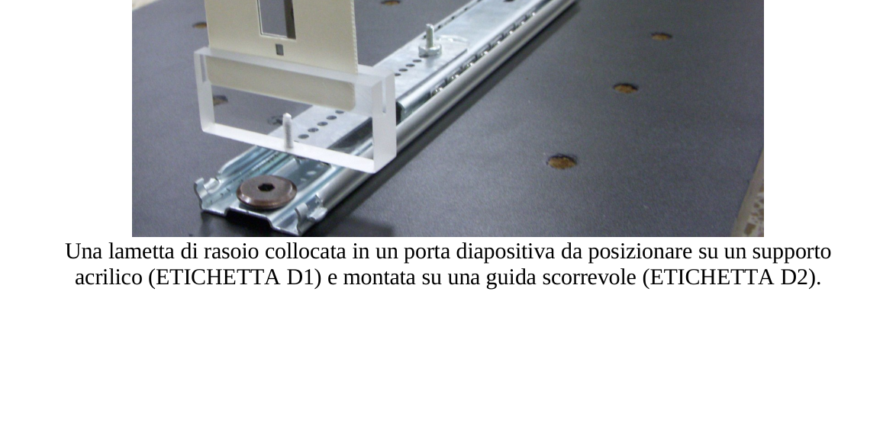
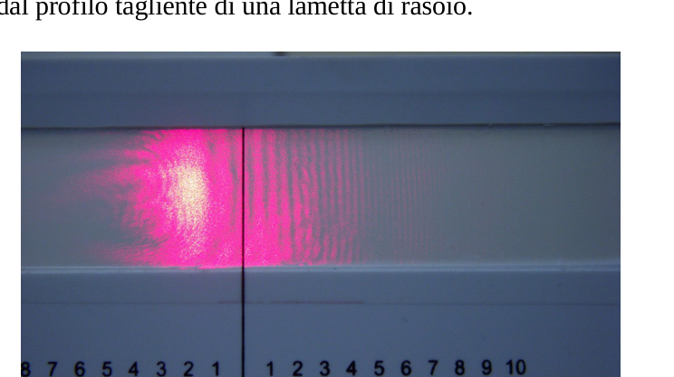
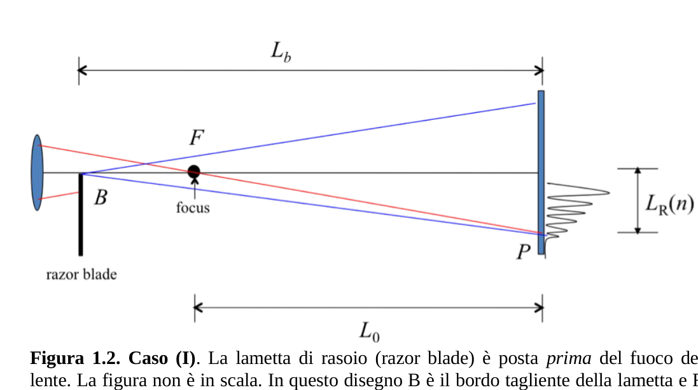
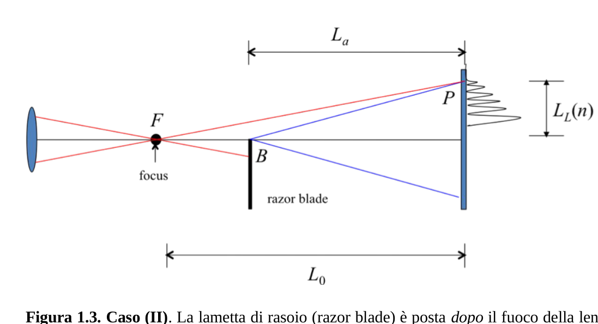

A SPERIMENTALE 1
PROBLEMA SPERIMENTALE 1 DETERMINAZIONE DELLA LUNGHEZZA D’ONDA DI UN DIODO LASER MATERIALE In aggiunta ai materiali 1), 2) e 3) dovresti utilizzare: 4) Una lente montata su un supporto quadrato (ETICHETTA C). 5) Una lametta di rasoio (rasor blade) collocata in un porta diapositiva da posizionare su un supporto acrilico (ETICHETTA D1) e montata su una guida scorrevole (ETICHETTA 2). Utilizza il cacciavite per fissare il supporto, se necessario. Osserva la fotografia per le istruzioni di montaggio. 6) Uno schermo di osservazione con scala calibrata (1/20 mm) (ETICHETTA E). 7) Una lente di ingrandimento (ETICHETTA F). 8) Un righello da 30 cm (ETICHETTA G). 9) Un calibro (ETICHETTA H). 10) Un metro a nastro (ETICHETTA I). 11) Una calcolatrice. 12) cartoncini di carta bianca, nastro di carta adesiva, bastoncini di sostegno, forbici, squadrette triangolari. 13) Matite, carta e carta millimetrata. Una lametta di rasoio collocata in un porta diapositiva da posizionare su un supporto acrilico (ETICHETTA D1) e montata su una guida scorrevole (ETICHETTA D2).
DESCRIZIONE DELL’ESPERIMENTO Devi determinare la lunghezza d’onda di un diodo laser. La caratteristica particolare di questa misura è che non sono usate scale micrometriche precise (come per esempio reticoli di diffrazione prefabbricati). Le lunghezze più piccole che potrai misurare sono dell’ordine del millimetro. La lunghezza d’onda è determinata usando la diffrazione della luce prodotta dal profilo tagliente di una lametta di rasoio.
Figura 1.1 Distribuzione tipica delle frange di interferenza. Dopo che il fascio laser (A) è stato riflesso sullo specchio (B), esso deve essere fatto passare attraverso la lente (C), che ha una lunghezza focale di pochi centimetri. Considera il fuoco come una sorgente puntiforme di luce che emette una onda sferica. Dopo la lente, e lungo il tragitto della luce, il fascio colpisce il bordo tagliente di una lametta di rasoio, posta come ostacolo. Di conseguenza il bordo può essere considerato come una sorgente di luce che emette un’onda cilindrica. Queste due onde interferiscono una con l’altra, nella direzione di propagazione, dando origine ad una distribuzione di frange di interferenza che possono essere osservate su uno schermo. In figura 1.1 puoi vedere la fotografia di una distribuzione tipica. Considera due casi importanti, come mostrato nelle Figure 1.2 e 1.3.
Figura 1.2. Caso (I). La lametta di rasoio (razor blade) è posta prima del fuoco della lente. La figura non è in scala. In questo disegno B è il bordo tagliente della lametta e F è il fuoco della lente. Figura 1.3. Caso (II). La lametta di rasoio (razor blade) è posta dopo il fuoco della lente. La figura non è in scala. In questo disegno B è il bordo tagliente della lametta e F è il fuoco della lente.
DISPOSITIVO SPERIMENTALE Compito 1.1 Disposizione dell’apparecchiatura sul banco ottico (1.0 punto). Progetta una disposizione sperimentale per ottenere le distribuzioni delle frange di interferenza prima descritte. La distanza dal fuoco allo schermo deve essere molto maggiore della lunghezza focale.
Nello schema raffigurante il banco ottico sul foglio risposte, fai un disegno della disposizione sperimentale che hai realizzato. Realizza ciò scrivendo le ETICHETTE dei diversi componenti sullo schema raffigurante il banco ottico. Puoi fare anche disegni esemplificativi aggiuntivi per aiutare a spiegare la tua disposizione sperimentale.
Puoi allineare il fascio laser utilizzando uno dei cartoncini bianchi di carta per individuare il percorso della luce.
Fai un disegno del percorso del fascio laser sullo schema raffigurante il banco ottico e riporta l’altezza h del fascio, misurata rispetto al piano del banco ottico. ATTENZIONE: Potrebbe apparire una larga figura ad anello, ignorala. Questo è un effetto dovuto al diodo laser stesso. Utilizza un po’ di tempo per familiarizzarti con il dispositivo. Dovresti essere capace di vedere circa 10 o più frange lineari verticali sullo schermo. Le letture sono realizzate utilizzando la posizione delle frange scure. Usa la lente di ingrandimento per vedere più chiaramente la posizione delle frange. Il modo migliore per vedere le frange è di osservare dalla parte posteriore dello schermo illuminato (E). In questo modo, la scala dello schermo dovrebbe guardare verso l’esterno del banco ottico. Se l’allineamento del banco ottico è corretto, dovresti vedere entrambe le distribuzioni (dei Casi I e II) semplicemente traslando la lametta (D1) lungo la guida (D2). CONSIDERAZIONI TEORICHE Con riferimento alle precedenti figure 1.2 e 1.3, ci sono cinque lunghezze fondamentali: : distanza dal fuoco allo schermo. : distanza dalla lametta di rasoio allo schermo, Caso I. : distanza dalla lametta di rasoio allo schermo, Caso II. : posizione della n-esima frangia scura per il Caso I. : posizione della n-esima frangia scura per il Caso II.
Per entrambi i Casi I e II, la prima frangia nera è la più ampia e corrisponde a n = 0. La tua disposizione sperimentale deve essere tale che per il Caso I e per il Caso II. Il fenomeno della interferenza di onde è dovuto alla differenza dei cammini ottici per due onde che partono dallo stesso punto. A seconda della loro differenza di fase, le due onde possono cancellarsi una con l’altra (interferenza distruttiva) dando origine a frange scure; oppure le due onde possono sommarsi (interferenza costruttiva) ottenendo frange chiare. Un’analisi dettagliata dell’interferenza di queste onde fornisce la seguente condizione per ottenere una frangia scura, per il Caso I: con n = 0, 1, 2, (1.1) e per il Caso II: con n = 0, 1, 2, (1.2) dove è la lunghezza d’onda del fascio di luce laser, e sono la differenza di cammino ottico per ciascuno dei due casi. La differenza di cammino ottico per il Caso I è per ogni n = 0, 1, 2, (1.3) mentre per il Caso II è per ogni n = 0, 1, 2, (1.4) Compito 1.2 Espressioni per le differenze di cammino ottico (0.5 punti). Assumendo per il Caso I e per il Caso II nelle equazioni (1.3) e (1.4) (accertati che la tua disposizione sperimentale soddisfi queste condizioni), ricava le espressioni approssimate per
e
in funzione di . Usa l’approssimazione se .
La difficoltà sperimentale con le equazioni precedenti è che , e non possono essere misurate accuratamente. Primo, perché non è facile trovare la posizione del fuoco della lente; secondo, perché l’origine da cui esse sono definite può essere molto difficile da trovare a causa dei disallineamenti dei tuoi componenti ottici. Per superare queste difficoltà con e scegli anzitutto lo zero (0) della scala dello schermo (ETICHETTA E) come origine per tutte le tue misure delle frange. Siano e le posizioni (sconosciute) dalle quali e sono definite. Siano e le posizioni delle frange misurate dall’origine (0) che hai fissato. Pertanto (1.5) ESECUZIONE DELL’ESPERIMENTO. ANALISI DEI DATI. Compito 1.3 La misura delle posizioni delle frange scure e delle posizioni della lametta (3.25 punti).
Per entrambi i Casi, I e II, misura le posizioni delle frange scure e in funzione del numero n della frangia. Riporta le tue misure nella Tabella I; dovresti riportare non meno di 8 misure per ciascun caso.
Riporta anche le posizioni della lametta e e indica con la sua ETICHETTA lo strumento che hai usato.
SUGGERIMENTO IMPORTANTE: Ai fini, sia di una semplificazione dell’analisi, sia di una migliore accuratezza, misura direttamente la distanza con una accuratezza migliore di quella dei singoli e ; in altri termini, non ricavare d dalle misure di e . Indica con la sua ETICHETTA lo strumento che hai usato. Accertati di includere l’incertezza delle tue misure. Compito 1.4 Analisi dei dati. (3.25 punti). Con tutte le informazioni precedenti dovresti essere in grado di ricavare i valori di e e, naturalmente, della lunghezza d’onda .
Escogita un procedimento per ricavare questi valori. Riporta le espressioni e/o le equa
p.1 — Banco ottico con lente e lametta

p.2 — Distribuzione frange di interferenza con righello

p.3 — Figura 1.2 Caso I lametta prima del fuoco

p.3 — Figura 1.3 Caso II lametta dopo il fuoco

Topic: Wave Optics, Geometric Optics, Oscillations & Waves Metodi: Interference & Diffraction Analysis, Superposition Principle, Approximation & Series Expansion, Experimental Data Analysis, Graph Linearization Competenze: Experimental Data Analysis, Measurement & Instrumentation, Error Propagation Objects: Lens, Mirror, Screen Fonte: Testo (PDF) — p.1 Soluzione: Soluzioni (PDF)
The following is the list of the types of test results:
The Commission has already decided to take a decision on the The Commission shall adopt the following measures: From a laser diode The following information is provided: In addition to the materials 1), 2) and 3) you should use: 4) A lens mounted on a square support (Etiquette C). 5) A razor blade placed in a slide door by positioned on an acrylic support (ETHICETTA D1) and mounted on a guide The following is the list of the products which are available for sale: Use the screwdriver to fix the support if: It’s necessary. Look at the photo for the installation instructions. 6) An observation screen with calibrated scale (1/20 mm) (Etiquette E). 7) An enlargement lens (Etiquette F). 8) A 30 cm reel (Etiquette G). 9) A caliber (H-type). 10) A tape meter (ETIQUET I). 11) A calculator. 12) white paper cardboard, adhesive paper tape, supporting rods, Scissors, triangular squares. 13) Pencils, paper and paper in millimetres. A razor blade placed in a slide door to be placed on a support Acrylic (Etiquette D1) and mounted on a sliding guide (Etiquette D2).
Description of the experiment You need to determine the wavelength of a laser diode. The particular characteristic of This measurement is that no precise micrometric scales are used (such as Prefabricated diffraction networks). The shortest lengths you can measure are The order of the millimeter. The wavelength is determined by using the diffraction of the light produced by the sharp profile of a razor blade.
Figure 1.1 Typical distribution of the interference fringes. After the laser beam (A) has been reflected on the mirror (B), it must be done pass through the lens (C), which has a focal length of a few centimeters. Consider Fire is like a pointed light source that emits a spherical wave. After the lens, And along the path of light, the beam hits the sharp edge of a razor blade, I’m not sure what the problem is. The edge can therefore be considered as a source of The light emits a cylindrical wave. These two waves interfere with each other in the direction of propagation, giving rise to a distribution of interference fringes which They can be viewed on a screen. In Figure 1.1 you can see the photograph of a the typical distribution. Consider two important cases, as shown in Figures 1.2 and 1.3.
The following table shows the results of the evaluation: The Commission shall adopt the following measures: The razor blade is placed before the fire of the Slow down. The figure is not in scale. In this drawing B is the cutting edge of the blade and F is The fire of the lens. The following table shows the following: The Commission shall adopt the following measures: The razor blade is placed after the lens is lit. The figure is not in scale. In this drawing B is the cutting edge of the blade and F is the the lens fire.
The Commission shall adopt implementing acts in accordance with Article 21 of this Regulation. Task 1.1 Disposition of the equipment on the optical bench (1.0 points). Project an experimental arrangement to obtain the distribution of the interference fringes The above mentioned. The distance The amount of fire on the screen must be much greater than the focal length.
In the diagram showing the optical bench on the answer sheet, draw a drawing of the The experimental arrangement you made. This is achieved by writing the Labels of the different components on the optical bench design. You can also make additional illustrative drawings to help explain your The following is the list of the types of tests:
You can align the laser beam using one of the white paper cardboard to Identify the path of the light.
Draw a path of the laser beam on the board diagram The height of the beam, measured against the plane of the optical bench, is h. WARNING: It may appear to be a large figure with a ring, but ignore it. This is a The effect is due to the laser diode itself. Take some time to familiarize yourself with the device. You should be able to You can see about 10 or more vertical linear edges on the screen. The readings are made using the position of the dark edges. Use the magnifying glass to see more The position of the franges. The best way to see the fringes is to Observe from the rear of the illuminated screen (E). So the scale The screen should look outwards at the optical bench. If the alignment of the Optical bench is correct, you should see both distributions (of Cases I and II) The test method is to be followed by the following steps: Theoretical considerations In relation to the previous Figures 1.2 and 1.3, there are five fundamental lengths: : distance from the fire to the screen. : distance from the screen razor blade, case I. : distance from the screen razor blade, Case II. : the position of the ninth dark fringe for Case I. : the position of the ninth dark fringe for Case II.
For both Cases I and II, the first black fringe is the widest and corresponds to n = 0. Your experimental arrangement must be such that for Case I and for case II. The phenomenon of wave interference is due to the difference in optical paths between two Waves that start from the same point. Depending on their phase difference, the two waves They can be erased with each other (destructive interference) giving rise to dark fringes; or the two waves can be added together (constructive interference) to produce clear fringes. A detailed analysis of the interference of these waves provides the following condition for obtain a dark fringe, for case I: with n = 0, 1, 2, (1.1) and for Case II: with n = 0, 1, 2, (1.2) Where is the wavelength of the laser beam, e The difference between I’m going to have an optical path for each of these cases. The optical path difference for Case I is for each n = 0, 1, 2, (1.3) Whereas in Case II it is for each n = 0, 1, 2, (1.4) Task 1.2 Expressions for optical path differences (0.5 points). Assuming that for Case I and for Case II in equations (1.3) and (1.4) (ascertain that your test setup meets these conditions), Approximate expressions for
e
In accordance with . Use the approximation se .
The experimental difficulty with the previous equations is that , e Not They can be measured accurately. Firstly, because it is not easy to find the position of the The second reason is that the origin from which they are defined can be very It’s hard to find because of the misalignment of your optical components. To overcome these difficulties with e First, choose the zero (0) of the scale. The screen (E-TICK) as the source for all your fringe measurements. They are e the (unknown) positions from which: e They’re defined. They are e the positions of the fringes measured from the origin (0) that you fixed. Therefore, (1.5) The experiment was carried out. The data analysis is done. Task 1.3 Measurement of the positions of the dark rims and the positions of the The following table shows the results of the calculation:
For both Cases I and II, measure the positions of the dark fringes e according to the number n of the handle. Report your measurements in Table I; You should report no less than eight measurements per case.
Also reports the locations of the blade e And he points with his Label the tool you used.
IMPORTANT SUMMARY: For the purposes of simplification The analysis, which is more accurate, directly measures the distance With better accuracy than the individual e Other The Commission has not yet taken any further action. e . Indicate by your label The tool you used. Make sure you include the uncertainty of your measurements. Task 1.4 Analysis of the data. (iii. 25 points). With all the information you’ve got, you should be be able to obtain the values of e And of course, the wavelength .
A procedure is chosen to obtain these values. Report the expressions and/or the equal
Optical bench with lens and blade
The following conditions shall apply:
The following table shows the number of samples taken:
The following table shows the results of the tests:
Topic: Wave Optics, Geometric Optics, Oscillations & Waves Metodi: Interference & Diffraction Analysis, Superposition Principle, Approximation & Series Expansion, Experimental Data Analysis, Graph Linearization Competenze: Experimental Data Analysis, Measurement & Instrumentation, Error Propagation Objects: Lens, Mirror, Screen Fonte: Testo (PDF) — p.1 Soluzione: Soluzioni (PDF)